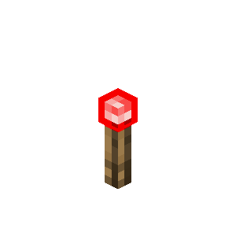

Ajouts et modifications
Sommaire
Gameplay
- Ouverture du Mode Hardcore : Le mode hardcore est maintenant disponible pour les joueurs bedrock sur des parties Realms.
- Interface de création de monde : Le processus de création de monde sur Realms bénéficie d’une interface revue.
- Mises à jour des Trial Chambers : Les trials chambers peuvent apparaître avec plusieurs variations, comme une génération procédurale.
- Nouvelles versions de créatures marines : Des versions bébés de poulpes, poulpes luisants et dauphins peuvent apparaître dans les lacs et biomes océans.
- De nouvelles variantes de saumon ont été ajoutées au jeu.
- Modifications de la mécanique des Slime Blocks : Il n'est plus possible d'annuler les dégats de chutte en s'accroupissant sur le bloc de slime lors des rebonds.
Objets et entités
- Ender Pearls : Lorsque l'on lance des perles de l’Ender, elles chargent maintenant les chunks.
- Motifs de bannière : De nouveaux motifs de bannière ont été ajoutés : “Field Masoned” et “Bordure Indented”, ils ont aussi reçu de nouveaux noms et icônes.
- Torches de redstone : Les torches de redstone reçoivent une mise à jour de texture, celle-ci est plus épurée et agréable à regarder
- Comportement des abeilles : Ajustement de la distance parcourue par les abeilles et des temps entre leurs comportements pacifiques et agressifs.
- Spawn des pillards : Les conditions d'apparition des pillards ont été mises à jour. Ils seront maintenant moins susceptibles d'apparaître dans des grottes ou dans des endroits inaccessibles aux joueurs
- Modifications des modèles de forge : Les modèles de forge ont des noms bien précis selon leur type, Il n'est plus nécessaire de survoler l'item avec la souris pour avoir des informations sur celui-ci.
- Citrouilles sculptées : En portant une citrouille sculptée sur la tête, Le joueur cache son pseudonyme des autres joueurs sur le monde.
- Rareté des objets : Création de nouveaux niveaux de rareté pour mieux montrer les difficultés d'obtention. 
Nouvelle texture de la torche de redstone
Accessibilités et performances
- Limitation des images par seconde Les FPS (frame per Second ) sont réduits quand le jeu n'est pas en plein écran ou quand le joueur est inactif. Il est possible de gérer ce paramètre dans les options.
- Performances : Cette version été optimisé afin d'améliorer les performances en jeu.
- Nouvelles langues : De nouvelles langues ont été ajoutées au jeu dont le tzotzil, le biélorusse (proche du latin) et le haut norvégien. Le support est aussi disponible pour ces langues.
- Drop d'item en mode créatif : La vitesse à laquelle les objets peuvent être jetés en mode créatif est désormais restreinte.
Motifs de bannière
- Les motifs de bannière affichent leur type directement dans le nom, sans nécessiter de sous-titre.
- Ajout de nouvelles textures pour mieux différencier chaque motif.
- Nouveaux motifs de bannière :
- Field Masoned : Peut être fabriqué avec du papier et des briques.
- Bordure Indented : Peut être fabriqué avec du papier et des lianes.
- Il n'est plus possible d'utiliser les motifs “Bricks” et “Curved Border” dans le métier à tisser sans leurs motifs de bannière.
Comportement des abeilles
- Les abeilles passent moins de temps en dehors de leur nid ou ruche.
- Lorsqu'une abeille appartient à un nid ou une ruche, elle ne s'éloignera pas de celui-ci, les abeilles parcourront une plus faible distance et risqueront moins de se perdre.
- Le délai avant qu'une abeille n'abandonne son retour à son nid ou ruche a été prolongé.
- La capacité des abeilles à naviguer autour des nids et des ruches a été améliorée, réduisant les risques qu'elles restent bloquées aux angles.
- Les abeilles tentent moins fréquemment d'atteindre des fleurs qui sont dans des endroits difficiles d'accès.
Apparition des pillards
- Les raids ne démarrent plus si les pillards ne trouvent pas de point d'apparition accessible à proximité du village ciblé.
- Les raids ne peuvent démarrer que si les pillards trouvent un point d'apparition dans une zone de 96 blocs de hauteur autour du centre du village.
- Les points d'apparition des pillards pendant les raids ont été revus pour éviter qu'ils apparaîssent dans des blocs ou grottes.
Interface utilisateur
- En appuyant sur la touche espace ou entrée, le Livre de Recettes reproduit la dernière recette choisie.
- Les cases de l'inventaire ont une nouvelle mise en surbrillance pour une meilleure visualisation des objets.
- Des anciennes textures ont été ajoutées au pack de ressources "Programmer Art".
- L'interface des bulles d'air a été mise à jour, ajoutant un état vide et une animation d'oscillation quand le joueur manque d'oxygène sous l'eau.
- Un nouveau son de "pop" est joué lorsque les bulles d'air se vident dans l'interface.
Chargement des chunks avec les perles de l’End
- Les perles d'Ender maintiennent le chargement des chunks dans leur zone actuelle et leur zone de destination.
- Les perles d'Ender maintiennent les chunks chargés lors du voyage entre deux dimensions, cela permet un atterrissage plus précis et sécurisé.
- Comme pour les entités montées, les perles d'Ender disparaissent à la déconnexion du joueur et réapparaissent à sa reconnexion.
Rareté des objets et blocs
- Un système de rareté catégorise les objets et blocs en leur attribuant des couleurs distinctes. Par défaut, ils sont considérés comme "Communs" et leur nom s'affiche en blanc.
- La rareté d'un objet est déterminée par plusieurs critères : sa fréquence dans les coffres de butin, le parcours et l'éloignement nécessaire pour l'obtenir, la difficulté des défis à surmonter, et sa disponibilité générale dans un monde.
- Les objets et blocs craftables adoptent la rareté de leur composant le plus rare. Par exemple, la Masse est épique car elle nécessite un "Noyau Lourd", de rareté épique, pour sa fabrication.
 Bundle / Sac
Bundle / Sac